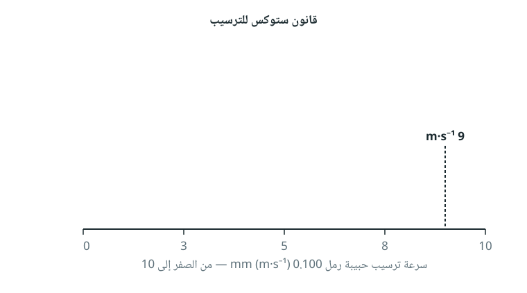

قانون ستوكس للترسيب
Stokes' law of settling
قانون ستوكس يعطي سرعة ترسيب جسيم كروي صغير في سائل ساكن عند جريان صفيحي: v = (ρ_p − ρ_f)·g·d²/(18μ). يُستعمل في تصميم أحواض الترسيب وفي تحليل حجم الحبيبات وفي فصل المستحلبات.
حين يسقط جسيم في سائل، تتزايد سرعته حتى يتساوى وزنه الفعلي مع قوة السحب اللزج. وعندئذٍ يتحرك بسرعة حدية ثابتة. ولجسيم كروي صغير وعدد رينولدز أقل من 0.1، تكون قوة السحب 3πμdv، فتكون السرعة الحدية: v = (ρ_p − ρ_f)·g·d²/(18μ). مثال: حبيبة رمل ρ_p = 2650 kg/m³ وقطرها 0.100 mm في ماء ρ_f = 998 kg/m³ وμ = 1.00×10⁻³ Pa·s: v = (2650−998)×9.806 65×(1.00×10⁻⁴)²/(18×1.00×10⁻³) = 1652×9.806 65×1.00×10⁻⁸/1.80×10⁻² = 1.620×10⁻⁴/1.80×10⁻² = 9.00×10⁻³ m/s، أي 9.00 mm/s.
كيف تعمل الظاهرة؟
الجسيم الأكثف من السائل يزن فعلياً أكثر من وزن السائل المزاح، فتنشأ قوة محصلة إلى أسفل. ومع زيادة السرعة يزداد سحب اللزوجة حتى يتساوى مع القوة المحصلة، فتثبت السرعة. وفي الجريان الصفيحي حول الكرة تنتقل الزخم باللزوجة طبقةً طبقة، ولا تنفصل الطبقة الحدية، فيكون السحب متناسباً مع السرعة لا مع مربعها. ولهذا تعتمد السرعة على مربع القطر: الجسيم الأكبر يزيح سائلاً أكثر ويتغلب على سحب أقل نسبياً.
العلاقة بالأرقام
v = (ρ_p − ρ_f)·g·d²/(18μ). مثال: ρ_p = 2650، ρ_f = 998، d = 1.00×10⁻⁴ m، μ = 1.00×10⁻³ Pa·s → v = 1652×9.806 65×1.00×10⁻⁸/(1.80×10⁻²) = 9.00×10⁻³ m/s. والتحقق: Re = 998×9.00×10⁻³×1.00×10⁻⁴/1.00×10⁻³ = 0.898، وهو أكبر من 0.1، فشرط الجريان الصفيحي غير محقق تماماً في هذا المثال، والقيمة 9.00 mm/s حدّ أعلى تقديري لا قيمة دقيقة. أما حبيبة قطرها 0.0100 mm فتعطي Re = 0.008 98، وهناك يكون القانون دقيقاً.
مفاهيم متقاربة
يُفرَّق بين قانون ستوكس وقانون نيوتن للسحب: الأول لـRe < 0.1 والسحب ∝ v، والثاني لـRe بين 10³ و2×10⁵ والسحب ∝ v². ويُفرَّق بين الترسيب الحر والترسيب المعيق: الثاني في تعليق مركّز ويُصحَّح بمعامل يعتمد على الكسر الحجمي. ويُفرَّد بين الترسيب بالجاذبية والترسيب بالطرد المركزي: الثاني يستبدل g بتسارع أكبر بكثير. وأخيراً يُفرَّق بين السرعة الحدية وسرعة الترسيب في حوض: الثانية تعتمد أيضاً على زمن المكوث.
حدود التطبيق
القانون صالح للجسيمات الكروية الملساء فقط، فالجسيمات غير المنتظمة تترسب أبطأ بمعامل كروية أقل من واحد. ولا يصلح عند Re > 0.1، حيث يبدأ السحب بالاعتماد على مربع السرعة. ولا يصف الجسيمات الدقيقة جداً تحت 1 µm، حيث يسيطر الحركة البراونية والترسيب لا يحدث. ولا يصف التعليقات المركّزة، حيث تتداخل الجسيمات ويقل الترسيب.

| الكمية | القيمة | المصدر |
|---|---|---|
| سرعة ترسيب حبيبة رمل 0.100 mm | 9.00×10⁻³ m·s⁻¹ | [1] |
| عدد رينولدز للجسيم عند 0.100 mm | 0.898 بلا وحدة | [1] |
المصادر
- 1 CODATA Value: molar gas constant — NIST — CODATA 2022 recommended values (2024). physics.nist.gov/cgi-bin/cuu/Value?r · اطُّلع عليه 2026-11-22
- 2 The International System of Units (SI), 9th edition (2019) — BIPM — Bureau International des Poids et Mesures (2019). www.bipm.org/en/publications/si-brochure · اطُّلع عليه 2026-11-22
- 3 The International System of Units (SI), 9th edition (2019) — BIPM — Bureau International des Poids et Mesures (2019). www.bipm.org/en/publications/si-brochure · اطُّلع عليه 2026-11-22
استشهد بهذا المصطلح
الصيغتان مبنيتان من بيانات الصفحة نفسها: العنوان والتاريخ ورابط النسخة المنشورة.
قانون ستوكس للترسيب — Stokes' law of settling. (2026). ديوان المعرفة — انفراد. https://infiradev.com/diwan/terms/term-stokes-law-settling.html
@misc{term-stokes-law-settling2026,
title = {قانون ستوكس للترسيب},
titleaddon = {Stokes' law of settling},
howpublished = {{ديوان المعرفة — انفراد} — مرجع علمي عربي},
year = {2026},
url = {https://infiradev.com/diwan/terms/term-stokes-law-settling.html},
urldate = {2026-11-26},
note = {مراجعة علمية: hermes (مراجعة معتمدة 2026-11-26)}
}
راجعه: hermes (مراجعة معتمدة 2026-11-26) · 2026-11-26 · آخر تحديث 2026-11-22